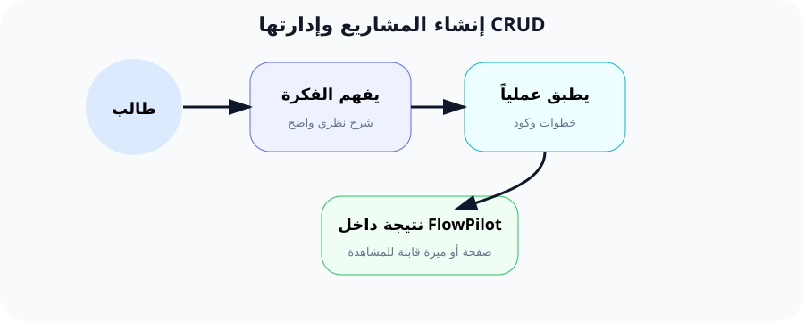

إدارة المشاريع (CRUD): بناء الدورة الكاملة للبيانات
"تطبيق الويب الحقيقي هو الذي يسمح للمستخدم بإنشاء وقراءة وتحديث وحذف بياناته."
ما هو الـ CRUD؟
CRUD هو اختصار لأربع كلمات إنجليزية تصف العمليات الأربعة الأساسية التي تقوم بها أي تطبيق يدير بيانات:
- C → Create (إنشاء): إضافة سجل جديد إلى قاعدة البيانات.
- R → Read (قراءة): عرض البيانات الموجودة.
- U → Update (تحديث): تعديل بيانات سجل موجود.
- D → Delete (حذف): إزالة سجل نهائياً.
كل عملية من هذه العمليات لها طريقة HTTP مخصصة (مثل GET للقراءة، POST للإنشاء، PUT للتحديث، DELETE للحذف). هذه الطرق هي لغة التواصل بين المتصفح والخادم.
الحروف الأربعة: تفصيل كامل لكل عملية
Create (إنشاء)
طريقة HTTP: POST
المسار: /projects
يضيف صفاً جديداً في جدول projects. يحتاج إلى بيانات من النموذج (form) يرسلها المستخدم.
Read (قراءة)
طريقة HTTP: GET
المسار: /projects أو /projects/{id}
يستعرض البيانات. إما كل المشاريع (index) أو مشروع واحد (show). لا يغير شيئاً في قاعدة البيانات.
Update (تحديث)
طريقة HTTP: PUT أو PATCH
المسار: /projects/{id}
يعدل صفاً موجوداً. يرسل المستخدم البيانات الجديدة عبر نموذج تعديل. الفرق بين PUT و PATCH: PUT يعدل كل الحقول، PATCH يعدل بعضها فقط.
Delete (حذف)
طريقة HTTP: DELETE
المسار: /projects/{id}
يزيل سجلاً من قاعدة البيانات إلى الأبد. يجب تأكيد العملية قبل التنفيذ (عادةً عبر مربع تأكيد JavaScript).
التحقق من البيانات (Validation)
لماذا نحتاج التحقق؟ تخيل أن مستخدماً أرسل نموذجاً وفيه اسم المشروع فارغ! أو أدخل 2000 حرف في حقل الاسم! بدون التحقق، ستتلف قاعدة البيانات أو تظهر أخطاء غريبة.
في Laravel، نستخدم دالة validate() داخل الـ Controller أو ننشئ Form Request مخصص. مثال:
// داخل دالة store في ProjectController
$validated = $request->validate([
'name' => 'required|min:3|max:255',
'description' => 'nullable|max:1000',
]);
// إذا فشل التحقق، Laravel يعيد المستخدم تلقائياً مع رسائل الخطأ
قاعدة required تعني أن الحقل إجباري. min:3 يعني أقل عدد أحرف هو 3. max:255 يعني أقصى حد 255 حرفاً. nullable يعني أن الحقل اختياري.
🌍 مثال من حياتنا اليومية: السجل المدني
تخيل أنك تعمل في مكتب السجل المدني. كل شخص له ملف وبيانات. إليك كيف تشبه عمليات CRUD ما يحدث في الواقع:
👶 Create = تسجيل مولود جديد
تدخل اسمه، تاريخ ميلاده، وعنوانه في السجل. هذا يشبه إضافة مشروع جديد في FlowPilot.
📋 Read = استخراج شهادة ميلاد
تطلب رقم الملف وتقرأ البيانات. هذا يشبه فتح صفحة المشروع لمشاهدته.
✏️ Update = تغيير العنوان
جاء شخص وطلب تغيير محل الإقامة. تعدّل البيانات في الملف. هذا يشبه تعديل وصف المشروع.
🗑️ Delete = إلغاء قيد
في حال وجود خطأ في التسجيل، تحذف الملف بالكامل. هذا يشبه حذف مشروع لم نعد نحتاجه.
إذن، CRUD ليس مجرد أكواد برمجية - إنه منطق إداري نستخدمه في حياتنا اليومية. التطبيق البرمجي يسهّل هذه العمليات ويجعلها أسرع.
الربط مع FlowPilot: المشاريع
في مشروع FlowPilot، المشروع (Project) هو الوحدة الأساسية. كل مستخدم يمكنه إنشاء عدة مشاريع، وكل مشروع يحتوي على عدة مهام (Tasks).
ستنشئ الآن جدول projects في قاعدة البيانات، وتكتب كل دوال التحكم (Controller) التي تسمح للمستخدم بالتحكم الكامل في مشاريعه.
ما سنبنيه في FlowPilot:
- ✅ صفحة
/projectsتعرض كل المشاريع (Read - Index). - ✅ زر "إضافة مشروع" يفتح نموذجاً (Create).
- ✅ نموذج يتحقق من صحة البيانات (Validation).
- ✅ زر تعديل بجانب كل مشروع (Update).
- ✅ زر حذف مع تأكيد (Delete).
- ✅ رسالة نجاح بعد كل عملية (Flash Message).
6 خطوات عملية لبناء CRUD كامل
الخطوة 1: إنشاء Model + Migration
ننشئ نموذج Project مع ملف الهجرة (migration) الذي ينشئ جدول المشاريع في قاعدة البيانات.
# الأمر في terminal
php artisan make:model Project -m
# الـ -m تنشئ ملف migration أيضاً
# النتيجة: ملفين
app/Models/Project.php
database/migrations/xxxx_create_projects_table.php
في ملف migration، نضيف الأعمدة: name (نص)، description (نص طويل، اختياري)، user_id (رقم المستخدم).
الخطوة 2: إضافة fillable في Model
في ملف app/Models/Project.php، نضيف الخاصية $fillable لتحديد الحقول المسموح بتعبئتها مرة واحدة (Mass Assignment).
// app/Models/Project.php
protected $fillable = ['name', 'description', 'user_id'];
// أو نستخدم $guarded = [] للسماح بكل الحقول (غير آمن)
سطر واحد فقط! لكنه مهم جداً. بدون $fillable، سترى خطأ MassAssignmentException عند محاولة الحفظ.
الخطوة 3: إنشاء ProjectController بـ 7 دوال
ننشئ Controller يحتوي على 7 دوال: index, create, store, show, edit, update, destroy.
php artisan make:controller ProjectController --resource
# --resource تنشئ الـ 7 دوال تلقائياً
الـ flag --resource يكتب هيكل الـ 7 دوال نيابة عنك. لا تحتاج لكتابتها يدوياً!
الخطوة 4: تسجيل Route::resource
في ملف routes/web.php، نضيف سطراً واحداً يسجل كل الـ 7 مسارات دفعة واحدة.
// routes/web.php
use App\Http\Controllers\ProjectController;
Route::resource('projects', ProjectController::class);
// هذا السطر الواحد يسجل 7 مسارات!
لتتأكد، شغّل php artisan route:list في terminal وسترى 7 مسارات تبدأ بـ projects.
الخطوة 5: كتابة دالة index() - جلب وعرض المشاريع
في ProjectController، نكتب دالة index() التي تجلب كل المشاريع من قاعدة البيانات وترسلها إلى React عبر Inertia.
public function index()
{
// 1. نجلب كل المشاريع من قاعدة البيانات
$projects = Project::all();
// 2. نرسلها إلى صفحة React عبر Inertia
return Inertia::render('Projects/Index', [
'projects' => $projects,
'success' => session('success'), // رسالة النجاح
]);
}
Project::all() ترجع كل الصفوف من جدول projects كمصفوفة من الكائنات. Inertia تحوّل هذه البيانات إلى Props في مكون React.
الخطوة 6: store() و update() و destroy()
الدوال الثلاث الباقية: store (حفظ جديد)، update (تعديل)، destroy (حذف). كلها ترجع رسالة نجاح.
// إنشاء مشروع جديد
public function store(Request $request)
{
$validated = $request->validate([
'name' => 'required|min:3|max:255',
'description' => 'nullable|max:1000',
]);
$validated['user_id'] = auth()->id();
$project = Project::create($validated);
return redirect()->route('projects.index')
->with('success', 'تم إنشاء المشروع "' . $project->name . '" بنجاح');
}
auth()->id() تجلب رقم المستخدم الذي سجل الدخول حالياً. هذا يربط المشروع بالمستخدم الصحيح.
// تعديل مشروع
public function update(Request $request, Project $project)
{
$validated = $request->validate(['name' => 'required|min:3']);
$project->update($validated);
return redirect()->route('projects.index')
->with('success', 'تم تحديث المشروع');
}
// حذف مشروع
public function destroy(Project $project)
{
$project->delete();
return redirect()->route('projects.index')
->with('success', 'تم حذف المشروع');
}
شرح الكود سطراً سطراً: Controller كامل
هذا هو الـ Controller الكامل. اقرأ كل سطر مع الشرح بجانبه:
// السطر 1: نستخدم namespace الخاص بالـ Controllers
namespace App\Http\Controllers;
// السطر 2: نستورد الكلاسات التي سنستخدمها
use App\Models\Project;
use Illuminate\Http\Request;
use Inertia\Inertia;
// السطر 3: تعريف الكلاس
class ProjectController extends Controller
{
// عرض كل المشاريع
public function index() {
// ::all() ترجع كل الصفوف كـ Collection
$projects = Project::all();
// نمرر المشاريع ورسالة النجاح إلى Inertia
return Inertia::render('Projects/Index', [
'projects' => $projects,
'success' => session('success'),
]);
}
// عرض صفحة إنشاء مشروع جديد
public function create() {
return Inertia::render('Projects/Create');
}
// حفظ مشروع جديد
public function store(Request $request) {
// التحقق: الاسم مطلوب، 3-255 حرف
$validated = $request->validate([
'name' => 'required|string|min:3|max:255',
'description' => 'nullable|string|max:1000',
]);
// إضافة user_id تلقائياً
$validated['user_id'] = auth()->id();
// create تنشئ السجل وتعيد الكائن
$project = Project::create($validated);
// إعادة توجيه مع رسالة نجاح
return redirect()->route('projects.index')
->with('success', "تم إنشاء المشروع '$project->name'");
}
// عرض مشروع واحد (للتفاصيل)
public function show(Project $project) {
return Inertia::render('Projects/Show', ['project' => $project]);
}
// عرض صفحة تعديل مشروع
public function edit(Project $project) {
return Inertia::render('Projects/Edit', ['project' => $project]);
}
// تحديث مشروع موجود
public function update(Request $request, Project $project) {
$validated = $request->validate([
'name' => 'required|string|min:3|max:255',
'description' => 'nullable|string|max:1000',
]);
// update تعدل السجل في قاعدة البيانات
$project->update($validated);
return redirect()->route('projects.index')
->with('success', 'تم تحديث المشروع');
}
// حذف مشروع
public function destroy(Project $project) {
// delete يزيل السجل من قاعدة البيانات
$project->delete();
return redirect()->route('projects.index')
->with('success', 'تم حذف المشروع');
}
}
ملاحظة: الدوال create() و edit() تعرض فقط صفحة النموذج. الدوال store() و update() و destroy() هي التي تنفذ العمليات الفعلية على قاعدة البيانات.
النتيجة المتوقعة بعد تنفيذ الخطوات
📋 صفحة index.html (قائمة المشاريع)
- ✅ تظهر كل المشاريع في قائمة مرتبة.
- ✅ بجانب كل مشروع: زر تعديل وزر حذف.
- ✅ في أعلى الصفحة: زر "مشروع جديد".
- ✅ إذا وُجدت رسالة نجاح، تظهر في شريط ملون.
📝 صفحة Create (نموذج الإنشاء)
- ✅ حقل إدخال اسم المشروع.
- ✅ حقل إدخال الوصف (اختياري).
- ✅ زر "حفظ".
- ✅ إذا ترك الاسم فارغاً، يظهر خطأ أحمر.
✏️ صفحة Edit (نموذج التعديل)
- ✅ الحقول ممتلئة مسبقاً بالبيانات الحالية.
- ✅ بعد الحفظ، يرجع المستخدم إلى القائمة.
- ✅ رسالة "تم تحديث المشروع" تظهر.
🗑️ عملية الحذف
- ✅ بعد الضغط على "حذف"، يظهر تأكيد.
- ✅ بعد التأكيد، يختفي المشروع من القائمة.
- ✅ رسالة "تم حذف المشروع" تظهر.
❌ الأخطاء الشائعة (مع الحل)
🚫 الخطأ 1: صفحة 404 عند زيارة /projects
السبب: نسيت كتابة Route::resource('projects', ProjectController::class) في web.php.
الحل: افتح routes/web.php وأضف السطر.
🚫 الخطأ 2: MassAssignmentException عند الحفظ
السبب: لم تضف $fillable في Model. Laravel يمنع تعبئة الحقول تلقائياً لأسباب أمنية.
الحل: أضف protected $fillable = ['name', 'description', 'user_id']; في Project.php.
🚫 الخطأ 3: Class "Project" not found
السبب: نسيت إضافة use App\Models\Project; في أعلى ProjectController.php.
الحل: أضف السطر use App\Models\Project; بعد namespace مباشرة.
🚫 الخطأ 4: خطأ 419 Page Expired عند إرسال النموذج
السبب: لا يوجد CSRF token في طلب POST. Laravel يطلب رمز CSRF لكل طلب POST أو PUT أو DELETE.
الحل: في Inertia، استخدم useForm الذي يضيف CSRF token تلقائياً. أو تأكد من أن النموذج يستخدم Inertia's post() method.
🚫 الخطأ 5: البيانات لا تظهر في صفحة React
السبب: الصفحة React لا تستقبل props بشكل صحيح. ربما نسيت تمرير البيانات في Inertia::render().
الحل: تأكد من أن Inertia::render('Projects/Index', ['projects' => $projects]) يحتوي على المفتاح projects وأن الصفحة تقرأه من usePage().props.
مخططات توضيحية

مخطط CRUD: دورة حياة البيانات

تدفق الطلب من المستخدم إلى قاعدة البيانات
📌 ملخص الدرس
المفاهيم الرئيسية:
- ✅ CRUD = Create, Read, Update, Delete.
- ✅ Route::resource يسجل 7 مسارات بسطر واحد.
- ✅ التحقق (validation) يمنع البيانات الخاطئة.
- ✅ fillable يسمح بالتعبئة الجماعية الآمنة.
الخطوات القادمة:
- 📌 الدرس القادم: بناء لوحة Kanban للمهام.
- 📌 بعدها: Inertia Forms للتحكم في النماذج.
- 📌 ثم: رفع الملفات والمرفقات.